| How to play Fanorona |
| Contents |
| 1.Basic Ideas | 2.Capturing | 3.Relay Capturing | |
| 4.Capture Restrictions | 5.Paika Moves | 6.End of the Game | 7.License |
| Basic Ideas |
Fanorona is a board game for two players. It is played with black and white pieces placed on a board. The board is a rectangular grid of nine lines by five, with some diagonal lines marked.
The picture shows the board at the start of the game. The two players each have 22 pieces of their colour on the board. The pieces are placed where the gridlines cross, as shown.
| 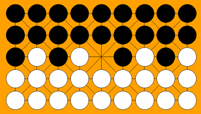 |
| Ready to Start! |
One player has the black pieces and the other has white. White moves first, then Black, and so on with the players taking turns. To win the game, you have to take all your opponent's pieces, or to leave a position where they can't move. If neither player manages to win, then the game is a draw.
| Capturing |
A piece moves one space only along the lines of the board, either straight or diagonally. Pieces can only move onto empty spaces, they cannot land on top of another piece. And you can only make diagonal moves along the diagonal lines shown on the board.
Whenever you make a move, you must make a capturing move if you can. You capture a single piece or line of pieces by moving directly towards them, so that your piece ends up next to them. Or else by moving directly away from them, if your piece was already standing next to them.
Suppose that you are White in this game. You can move your piece marked A in the first picture below one space diagnonally forwards to the empty place in the middle of the board. Then it has moved directly towards the black pieces marked x and ended up next to them. So they are both captured.
You can capture any unbroken line of black pieces in this way. Because you captured these pieces by moving towards them, this is called capture by approach.
The second picture below shows the position after you have made this move. It is now Black's turn.
| 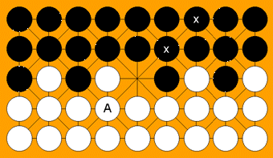 | 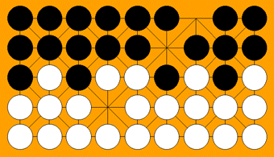 |
| Before your first move | After your first move |
| Relay Capturing |
When you make a capture, it is not necessarily the end of your turn. You are allowed to move the same piece again to capture more pieces. You can do this several times during the same turn, so long as you keep capturing each time you move the piece. We could call this a relay capture.
For example, in this game it is now Black's move. As we can see in the picture on the left below, Black can move the piece marked A one space up the board. This captures the three white pieces marked x by moving away from them. This way of taking pieces is called capture by withdrawal. The second diagram shows the situation after this happens.
| 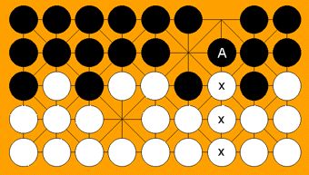 | 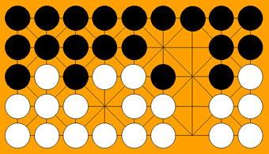 |
| Before Black's first capture | After the capture |
But this is not necessarily the end of Black's move. Black can now capture some more of your pieces! Look at the left-hand board in the next picture. The same piece which has just moved is again marked A. It can now move diagonally down to the left and capture the piece marked y. The piece marked z will not be captured because of the gap between y and z.
The right-hand board shows the situation after this happens. Black could now make another capture in this same turn - can you see how?
Although Black could now capture more pieces, Black is allowed to choose whether or not to do this. Although you always have to capture some pieces on your turn if you can, you do not have to keep making more and more captures on the same turn if you don't want to. You can choose to stop at some point instead of moving your piece again.
| 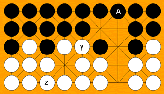 | 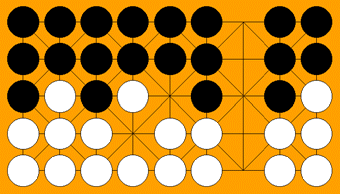 |
| Before Black's second capture | After the capture |
| Capturing Restrictions |
During a capturing move, it may happen that you move a piece in a way that could take some pieces by withdrawal or some others by approach. If this happens, you must choose which of the two captures you want to take. You are not allowed to take them both.
As an example, we could go back to the opening position. Here you could have started by moving the piece marked A one to the right. If you did that you could choose which of the two pieces marked x to take off. But you are not allowed to take them both.
| 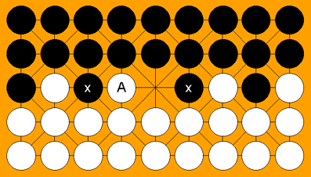 |
| Starting Position |
There are a few other rules about what happens during a relay capture. All the capturing must be done by the same piece. The piece must change direction each time it moves during the relay capture. And it must not stand on the same spot twice during this sequence.
As long as the piece changes direction at each stage during the move, it is free to re-use one of the directions it has used earlier at a later stage in the move.
| Paika Moves |
If you cannot make a capturing move, then you are allowed to make a non-capturing move. This is known as a paika move. To do this you simply move one piece along a line to an adjacent point.
<For example, let's go back to the game we were playing before. The left hand board in the next diagram shows the position later on in the same game. You now have four pieces and Black has only two, so you may have a good chance to win!
Here you can't make any capturing move, so you have to make a paika move. Suppose you move your piece at the bottom of the board one space to the right. This looks a bit odd, because Black is now forced to capture this piece by withdrawal. After that, you will get to the situation shown in the board on the right.
| 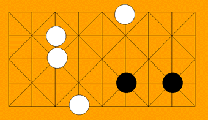 | 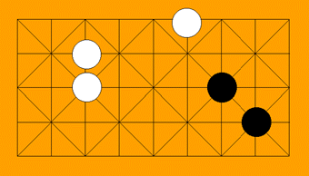 |
| Before your paika move | After Black's capture |
Your move was not so silly after all, because now you can move your piece at the top of the board straight down one space. Then the following move you will definitely be able to make a capture. So Black will be down to only one piece. See if you can work out what happens.
| End of the Game |
The game ends when one player has no pieces left, or is unable to make a move. Then they have lost. If neither player can force the other into this situation, the game is a draw.
Look at the position below. This might be the end of the game we have been looking at.
| 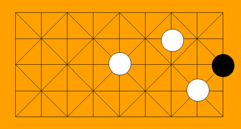 |
| Game Over! |
It is Black's move. But whatever move Black makes, you will capture the last black piece. The game is over!
| Attribution |
Original Copyright 2011 David Eppstein and contributors. The preceeding text is a derivative work of the code from the Gasy-Fanorona project, which is licensed GPLv3. This text therefore is also licensed under the terms of the GNU Public License, verison 3. For information on the license of this code see the original license at http://gasy-fanorona.sourceforge.net/license.html.